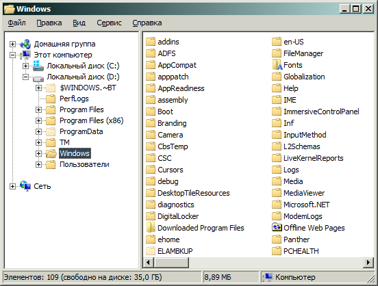

This is an updated script. It supports navigational mode browsing (open each folder in separate window) and the navigational tree. It also removes the address bar. Remember that you would need to use the Folder Options X utility as described above for the fixed borders to work. The executable for the script is in the archive.

Enjoy.
Code:
#NoTrayIcon
#NoEnv
Gui +LastFound
hWnd := WinExist()
SetControlDelay, -1
SetBatchLines -1
DllCall( "RegisterShellHookWindow", UInt,hWnd )
MsgNum := DllCall( "RegisterWindowMessage", Str,"SHELLHOOK" )
OnMessage( MsgNum, "ShellMessage" )
Return
ShellMessage(wParam,lParam) {
If (wParam = 1 or wParam = 6) ; HSHELL_WINDOWCREATED := 1
{
WinGetClass, WinClass, ahk_id %lParam%
if (WinClass = "CabinetWClass") {
;ControlGetPos,x,,w,,DirectUIHWND2, ahk_id %lParam%
;ControlMove, ShellTabWindowClass1,x-1,,w+1,, ahk_id %lParam%
Control, ExStyle, +0x200, FolderView, ahk_id %lParam%
Control, ExStyle, +0x200, SysTreeView321, ahk_id %lParam%
If (wParam = 6){
ControlGetPos,,,,h, ShellTabWindowClass1, ahk_id %lParam%
ControlMove, ShellTabWindowClass1,,,,h+1, ahk_id %lParam%
ControlMove, ShellTabWindowClass1,,,,h, ahk_id %lParam%
}
ControlGetPos, ,y1,,ha,ReBarWindow321, ahk_id %lParam%
SendMessage, 0x0082,,,ReBarWindow321, ahk_id %lParam%
Control, Hide,, WorkerW1, ahk_id %lParam%
Control, Hide,, ReBarWindow321, ahk_id %lParam%
ControlGetPos,,y2,,h1,ShellTabWindowClass1, ahk_id %lParam%
ControlMove, ShellTabWindowClass1,, y1,,y2-y1+h1, ahk_id %lParam%
ControlMove, ReBarWindow321,,,,0, ahk_id %lParam%
WinSet, Redraw,, ahk_id %lParam%
Sleep, 100
SendMessage, 0x0082,,,ReBarWindow321, ahk_id %lParam%
Control, Hide,, WorkerW1, ahk_id %lParam%
Control, Hide,, ReBarWindow321, ahk_id %lParam%
ControlGetPos,,y2,,h1,ShellTabWindowClass1, ahk_id %lParam%
ControlMove, ShellTabWindowClass1,, y1,,y2-y1+h1, ahk_id %lParam%
ControlMove, ReBarWindow321,,,,0, ahk_id %lParam%
WinSet, Redraw,, ahk_id %lParam%
Sleep, 100
SendMessage, 0x0082,,,ReBarWindow321, ahk_id %lParam%
Control, Hide,, WorkerW1, ahk_id %lParam%
Control, Hide,, ReBarWindow321, ahk_id %lParam%
ControlGetPos,,y2,,h1,ShellTabWindowClass1, ahk_id %lParam%
ControlMove, ShellTabWindowClass1,, y1,,y2-y1+h1, ahk_id %lParam%
ControlMove, ReBarWindow321,,,,0, ahk_id %lParam%
WinSet, Redraw,, ahk_id %lParam%
Sleep, 100
SendMessage, 0x0082,,,ReBarWindow321, ahk_id %lParam%
Control, Hide,, WorkerW1, ahk_id %lParam%
Control, Hide,, ReBarWindow321, ahk_id %lParam%
ControlMove, ShellTabWindowClass1,, y1,,y2-y1+h1, ahk_id %lParam%
ControlMove, ReBarWindow321,,,,0, ahk_id %lParam%
WinSet, Redraw,, ahk_id %lParam%
Sleep, 100
SendMessage, 0x0082,,,ReBarWindow321, ahk_id %lParam%
Control, Hide,, WorkerW1, ahk_id %lParam%
Control, Hide,, ReBarWindow321, ahk_id %lParam%
ControlMove, ShellTabWindowClass1,, y1,,y2-y1+h1, ahk_id %lParam%
ControlMove, ReBarWindow321,,,,0, ahk_id %lParam%
;here
}
if (WinClass = "NotebookFrame") {
Control, ExStyle, ^0x200, NotebookContent1, ahk_id %lParam%
WinGetPos, , , , h, ahk_id %lParam%
WinMove, ahk_id %lParam%,,,,,h-1
;WinMove, ahk_id %lParam%,,,,,h
}
}
}